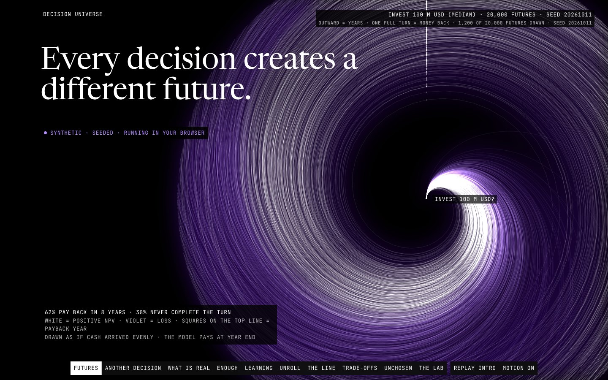

Data story · Monte Carlo · Bayesian · Optimisation · Causal inference · 2026-10
Decision Universe
Every decision creates a different future. 20,000 seeded futures of one investment, drawn as threads that wind clockwise as the money comes back, with ten decision-science instruments that recompute in your browser and check themselves against a Python reference.

Seeded environments are SYNTHETIC and illustrate method, not any real project or population. Only the German Credit applicants (Hofmann 1994, UCI, doi:10.24432/C5NC77, CC BY 4.0) and the NSW/PSID earnings (Dehejia and Wahba, NBER, attributable non-commercial use) are observed; derived results only, never row-level data. Model counterfactuals are not causal claims. Analytical examples, not advice.
01 — The problem
Decisions are made once, but their outcomes are a spread of possible futures. Most dashboards flatten that spread to one number and a band.
The questions: can every simulated future be shown as itself, so a decision's risk is something you can see and re-run with a different choice against the same luck, and can each statistical claim be checked live against an independent reference rather than asserted?
02 — What I built
A Python reference layer and a static browser site joined by published parity vectors.
- The Turn: each seeded future of an 8-year investment is a thread whose angle is the share of its own investment recovered and whose radius is years. One full turn is the money back; white threads gain, violet threads lose. Change the decision and the same worlds re-wind (common random numbers).
- Ten instruments: distributions, a bit-exact xoshiro128** PRNG, Monte Carlo, conjugate Bayes, forecast intervals, cost-sensitive thresholds, an LP Pareto front solved live by HiGHS-wasm, Sobol sensitivity, model counterfactuals, and causal estimators beside a randomised benchmark.
- Credible intervals are filled bands, confidence intervals are hollow brackets, prediction intervals are dashed hairlines, and they are never swapped.
03 — How it was built
- 01
Make the generator exact first
The PRNG is ported to TypeScript and reproduces the Python reference bit for bit for every published seed, 1,000 values deep. Every other number in the site stands on that.
- 02
Same worlds, another decision
Each future draws its five inputs in a fixed order whatever the decision, so BUILD NOW, PHASED and DELAY ONE YEAR face identical luck. Mean NPV 11.1 M USD with a 38% chance of loss for BUILD NOW; PHASED 13.4 M and 30%; DELAY ONE YEAR 10.2 M with 46% paying back inside 8 years.
- 03
Separate belief from procedure
A credible interval is where a belief sits given a prior; a confidence interval is a long-run rate of a procedure. They are different marks with their own sentences, and the coverage study prints the exact numbers (at n 20 the two cover the same outcomes, which the page says).
- 04
Put the estimate beside the experiment
The randomised NSW benchmark is 1,794 USD. The naive PSID comparison misses by 16,999 USD; weighting lands within 513 USD but rests on about 12 effective controls, and the page shows that next to the number and the causal graph's assumptions.
- 05
Say when it matches and when it cannot
Each LAB row recomputes in the browser and reports MATCHES PYTHON REFERENCE only at a seed with a published vector. At any other seed it says there is none; precomputed parts (bootstraps, the model fit) do not move.
04 — Results
Verified. 20,000 seeded futures; all ten instruments match their published vectors (the LAB runs all ten live); HiGHS reproduces the 21-point Pareto front to 1e-6. Cost threshold: the best cutoff cuts expected cost from 1.09 to 0.58 per applicant at the published 5:1 matrix. Validation: 71 recorded checks, 0 failures.
Measured on the live site. Lighthouse x3 mobile performance 0.93 to 1.00 (one cold run had CLS 0.135, the other two 0.011), LCP 1.5 to 2.0 s, accessibility 1.00; desktop performance 1.00, LCP about 0.33 s. At 1440 and 390 wide: 21 requests, 0 failed, 0 console errors, 0 external hosts. Tests: pytest 35, Vitest 60, Playwright 25 (whole-document collision walks at six sizes, pixel contrast, axe in motion and reduced motion, worker and solver failure paths).
Honest limits: the final visual review was a single-reviewer read of screenshots at 1440, 768 and 390, not a fresh independent QA pass; the Turn draws 500 to 1,200 of the 20,000 futures (statistics use all); NSW numbers come from one small volunteer sample.
05 — What I'd do next
- Draw by measured frame time instead of a fixed per-device cap, and move the Turn to instanced WebGL2 lines.
- Add a second decision environment so the same instruments run on something other than a single investment.
- Reproduce the bootstrap and coverage studies in the browser instead of showing them precomputed.